繼上一篇文章:如何建立 Jenkins Pipeline 專案 ，於 Jenkins Pipeline 專案內，加入 sonarQube 程式碼分析
安裝 SonarQube 服務 透過 docker-compose 安裝服務sonarQube-docker-compose.yml
1 2 3 4 5 6 7 8 9 10 11 12 13 14 15 16 17 18 19 20 21 22 23 24 25 26 27 28 29 30 31 32 33 34 35 36 37 38 39 40 41 42 version: '3' services: sonarqube: image: sonarqube expose: - 9000 ports: - '127.0.0.1:9000:9000' networks: - sonarnet environment: - SONARQUBE_JDBC_URL=jdbc:postgresql://db:5432/sonar - SONARQUBE_JDBC_USERNAME=sonar - SONARQUBE_JDBC_PASSWORD=sonar volumes: - sonarqube_conf: /opt/sonarqube/conf - sonarqube_data: /opt/sonarqube/data - sonarqube_extensions: /opt/sonarqube/extensions - sonarqube_bundled-plugins: /opt/sonarqube/lib/bundled-plugins db: image: postgres networks: - sonarnet environment: - POSTGRES_USER=sonar - POSTGRES_PASSWORD=sonar volumes: - postgresql: /var/lib/postgresql - postgresql_data: /var/lib/postgresql/data networks: sonarnet: volumes: sonarqube_conf: sonarqube_data: sonarqube_extensions: sonarqube_bundled-plugins: postgresql: postgresql_data:
執行即可，sonarQube 網站將會在http://127.0.0.1:9000，帳密預設皆為admin
新建 sonarqube 專案 於網站右上角點選新增專案的按鈕，並指定好專案名稱
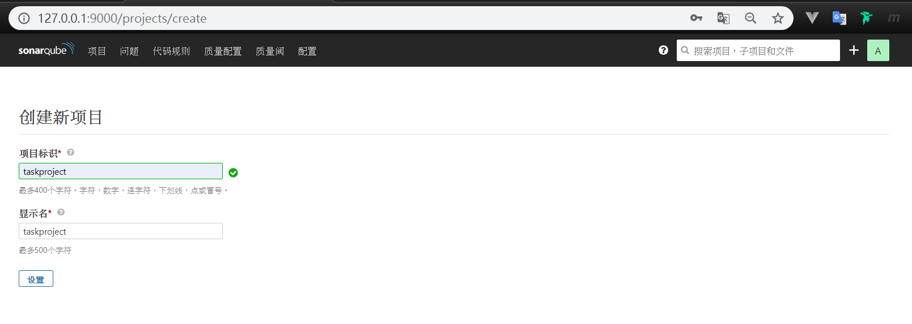
這邊需要產生一個 token 讓後續步驟使用，指定一個名稱即可，token 內容會被產生出來
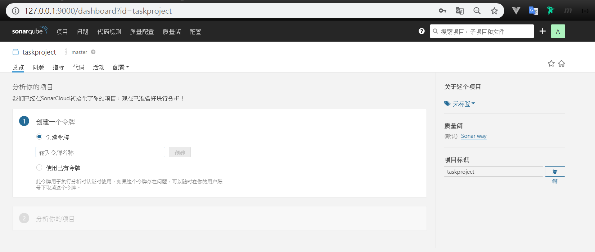
這個密碼只會出現一次，但是如果之後忘記了，可以在個人的帳號底下管理 token
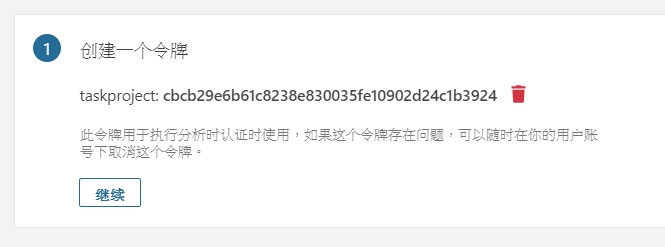
這邊因為我的範例項目是 c-sharp，所以當然就選 c-sharp，其他語言的話，點選也會有指示
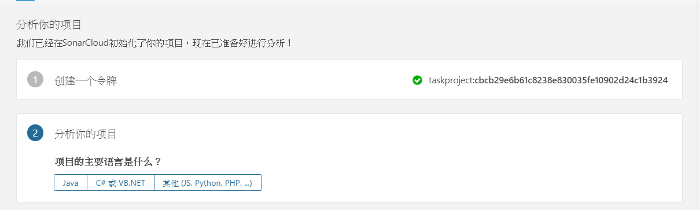
下面的步驟就照著做
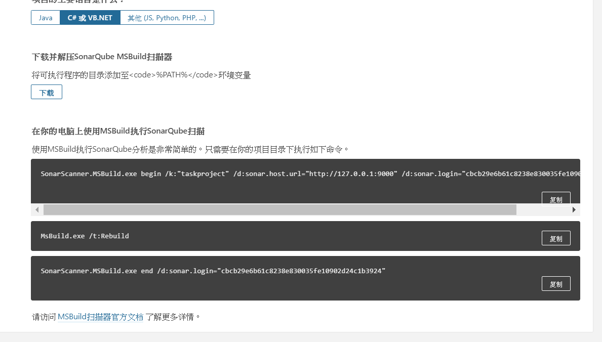
在這個頁面 下載合適的版本
畫面的指令碼有三段，其實就是做三件事情
準備蒐集資訊，這裡需要告訴 scanner 要分析的專案名稱、還有剛剛的 token，另外也跟 sacnner 說，我們所建立的 sonarqube 網站在哪裡 透過 msbuild 重建專案，讓 scanner 蒐集資訊 分析剛剛所蒐集到的資訊並傳送給 sonarqube 因為我在截圖的時候沒有把 token 複製下來，所以下面的指令是我產生新的 token
1 2 3 4 5 6 7 8 9 # SonarScanner.MSBuild.exe begin /k:"taskproject" /d:sonar.host.url="http://127.0.0.1:9000" /d:sonar.login="9ef26bd5d79f1893a0bfe91d572a04a04b12908a" /d:sonar.cs.dotcover.reportsPaths="report.html" # MSBuild.exe /t:Rebuild # SonarScanner.MSBuild.exe end /d:sonar.login="9ef26bd5d79f1893a0bfe91d572a04a04b12908a"
執行完上述步驟，應該可以在網站上面看到分析結果
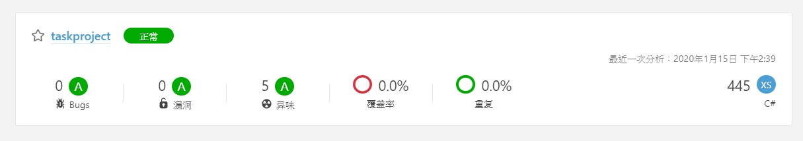
但是，測試覆蓋率的地方是不是有點問題？怎麼都是 0 呢？
讓 SonarQube 正確顯示單元測試覆蓋率 依照先前的步驟，應該可以看到一些指標數據，但是在單元測試的覆蓋率應該都是看不到的，因為 sonarQube 還必須要經過其他的方式取得單元測試的數據才能正確顯示，更詳細一點的文件可以參考官方文章 、C# Plugin ，這兩篇文章的內容大致上就是說明了一下官方建議的做法，有興趣可以研究一下
官方文件的重點有
需要用工具產生報告，工具可以選擇 dotCover, NCover, OpenCover, PartCover 其中一個 每一種工具所支援的報告格式不太一樣，使用前須詳閱說明書，以 dotCover 為例，需要給 html 格式報告，並透過sonar.cs.dotcover.reportsPaths參數指定 因為 sonar 支援的三種工具，我已經有購買了 dotCover，所以當然首選使用它作為覆蓋率的工具，在使用上需要注意的是，從官方下載記得要選Command Line Tools ，因為已經有授權，所以我也不是很清楚沒有授權的話會發生甚麼事情，但應該也可以用OpenCover 代替
查閱了 dotCover 的文件，產生單一單元測試專案的報告可透過指令，當然指令也支援設定檔(xml)
可透過dotCover.exe help analyse cover.xml 指令產生一個範例設定檔，將正確設定填入即可
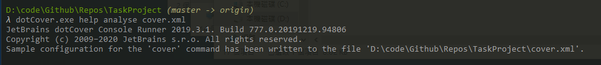
將設定檔設定如下
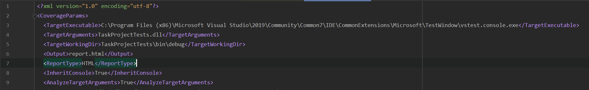
這樣子就可以直接透過指令進行分析、並產生報告
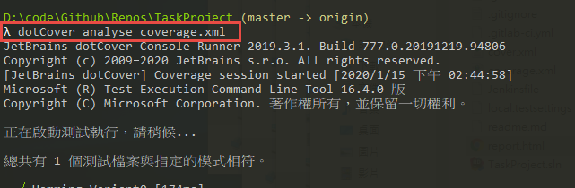
如果想要用指令列參數替代上面這個設定檔，可改寫成下列型式
1 dotCover cover /TargetExecutable="C:\Program Files (x86)\Microsoft Visual Studio\2019\Community\Common7\IDE\CommonExtensions\Microsoft\TestWindow\vstest.console.exe" /TargetArguments="TaskProjectTests.dll" /TargetWorkingDir="TaskProjectTests\bin\debug" /Output="report.html" /ReportType="HTML"
產生完畢報告之後，可以透過瀏覽器觀看
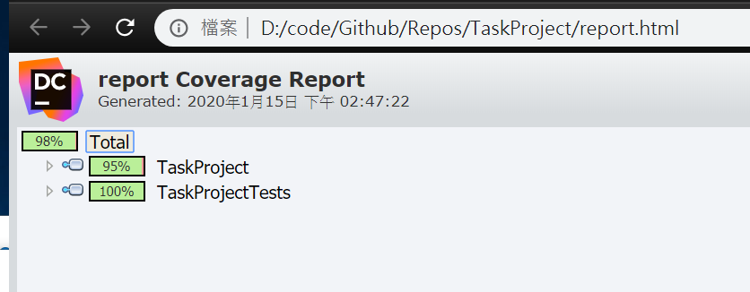
但是分析居然連測試專案都一起顯示了，我希望能夠聚焦在我的 lib，而不要顯示測試專案的數據
這當然也是可以透過排除的方式來設定；而如果有多個專案要合併測試結果，則需要為每一個測試專案先產生報告的快照，再將這些快照合併，最終將合併的結果轉換為 Html 格式的報告才可以用
更多細節就請參考文件Coverage Analysis from the Command Line
將專案根目錄下的coverage.xml加入 Filter 區段的設置如下
1 2 3 4 5 6 7 8 9 10 11 12 13 14 15 16 17 18 19 <?xml version="1.0" encoding="utf-8"?> <CoverageParams > <TargetExecutable > C:\Program Files (x86)\Microsoft Visual Studio\2019\Community\Common7\IDE\CommonExtensions\Microsoft\TestWindow\vstest.console.exe</TargetExecutable > <TargetArguments > TaskProjectTests.dll</TargetArguments > <TargetWorkingDir > TaskProjectTests\bin\debug</TargetWorkingDir > <Output > report.html</Output > <ReportType > HTML</ReportType > <InheritConsole > True</InheritConsole > <AnalyzeTargetArguments > True</AnalyzeTargetArguments > <Filters > <ExcludeFilters > <FilterEntry > <ModuleMask > TaskProjectTests</ModuleMask > <ClassMask > *</ClassMask > <FunctionMask > *</FunctionMask > </FilterEntry > </ExcludeFilters > </Filters > </CoverageParams >
這次就只有 lib 的數據了
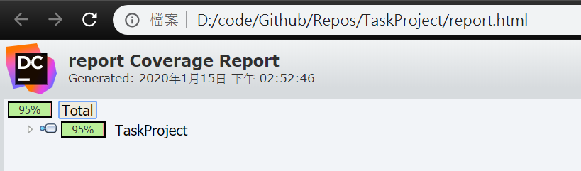
將報告結果加入 sonarqube 顯示 依照官方的說法，我們必須將 dotCover 的 HTML 格式報告，透過參數指定讓 sonarScanner 取得，加入參數/d:sonar.cs.dotcover.reportsPaths="report.html"
1 2 3 4 5 6 7 8 9 # SonarScanner.MSBuild.exe begin /k:"taskproject" /d:sonar.host.url="http://127.0.0.1:9000" /d:sonar.login="9ef26bd5d79f1893a0bfe91d572a04a04b12908a" /d:sonar.cs.dotcover.reportsPaths="report.html" # MSBuild.exe /t:Rebuild # SonarScanner.MSBuild.exe end /d:sonar.login="9ef26bd5d79f1893a0bfe91d572a04a04b12908a"
測試覆蓋率已經能正確顯示了
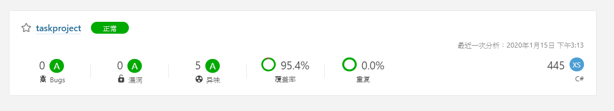
實際範例 下面這個是我實際的執行指令，專案是.netCore 2.1的
1 2 # 產生測試報告 dotCover cover --TargetExecutable="C:\\Program Files\\dotnet\\dotnet.exe" --TargetWorkingDir="myproject.Tests" --TargetArguments="test \\"myproject.Tests.csproj\\"" --Filters=-:myproject.Tests --output=AppCoverageReport.html --reportType=HTML
利用dotnet tool install --global dotnet-sonarscanner的指令安裝 dotnet 外掛
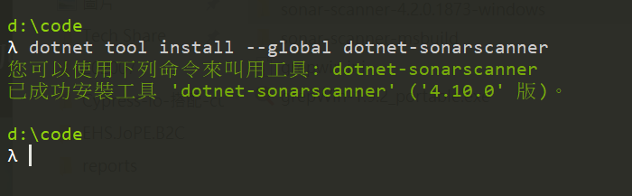
1 2 3 4 5 dotnet sonarscanner begin /d:sonar.host.url="http://127.0.0.1:9090" /k:"myproject" /d:sonar.login="2c244539263ac8b5c4b4414b2b8c190a8ca873d9" /d:sonar.cs.dotcover.reportsPaths="AppCoverageReport.html" dotnet build project.sln dotnet sonarscanner end /d:sonar.login="2c244539263ac8b5c4b4414b2b8c190a8ca873d9"
於 Pipeline 專案當中設定 手動執行成功後，將其透過 jenkins 的 pipeline syntax 的幫助，我們可以將需要執行的指令透過 groovy 語法寫出來
1 2 3 4 5 6 7 8 9 stage('build + SonarQube' ) { steps { bat label: '' , script: 'D:\\art\\programs\\sonar-scanner-msbuild-4.7.1.2311-net46\\SonarScanner.MSBuild.exe begin /k:"taskproject" /d:sonar.host.url="http://127.0.0.1:9000" /d:sonar.login="9ef26bd5d79f1893a0bfe91d572a04a04b12908a" /d:sonar.cs.dotcover.reportsPaths="report.html"' bat label: '' , script: 'MSBuild.exe /t:Rebuild' bat label: '' , script: 'D:\\art\\programs\\sonar-scanner-msbuild-4.7.1.2311-net46\\SonarScanner.MSBuild.exe end /d:sonar.login="9ef26bd5d79f1893a0bfe91d572a04a04b12908a"' } }
而整個 pipeline 需要執行的動作分別是
取得原始檔案 nuget 還原套件 先建置第一次產生測試專案的 dll 給 dotCover 產生報告用 呼叫 dotCover 產生報告 啟用 sonarScanner 準備蒐集資訊，同時給予測試報告 專案重新建置 關閉 sonarScanner，分析資訊 所以整體的jenkinsFile設定如下
1 2 3 4 5 6 7 8 9 10 11 12 13 14 15 16 17 18 19 20 21 22 23 24 25 26 27 28 29 30 31 32 33 34 35 36 37 pipeline { agent any stages { stage('git' ) { steps { git credentialsId: 'e3b7e18a-ea0f-48be-8d8f-a1d214c3c351' , url: 'https://github.com/partypeopleland/TaskProject' } } stage('nuget' ) { steps { bat label: '' , script: 'nuget restore TaskProject.sln' } } stage('build for testDLL' ) { steps { bat label: '' , script: 'msbuild /p:Configuration=Debug' } } stage('analyse + unittest' ) { steps { bat label: '' , script: '"D:\\art\\programs\\JetBrains.dotCover.CommandLineTools.2019.3.1\\dotCover.exe" analyse coverage.xml' } } stage('build + SonarQube' ) { steps { bat label: '' , script: 'D:\\art\\programs\\sonar-scanner-msbuild-4.7.1.2311-net46\\SonarScanner.MSBuild.exe begin /k:"taskproject" /d:sonar.host.url="http://127.0.0.1:9000" /d:sonar.login="9ef26bd5d79f1893a0bfe91d572a04a04b12908a" /d:sonar.cs.dotcover.reportsPaths="report.html"' bat label: '' , script: 'MSBuild.exe /t:Rebuild' bat label: '' , script: 'D:\\art\\programs\\sonar-scanner-msbuild-4.7.1.2311-net46\\SonarScanner.MSBuild.exe end /d:sonar.login="9ef26bd5d79f1893a0bfe91d572a04a04b12908a"' } } } }
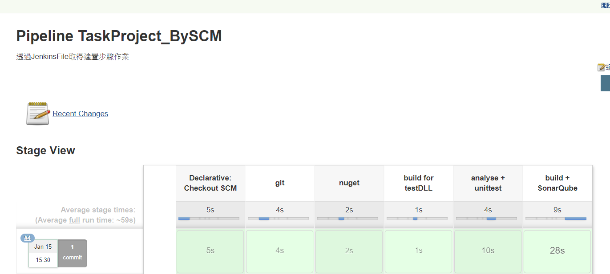
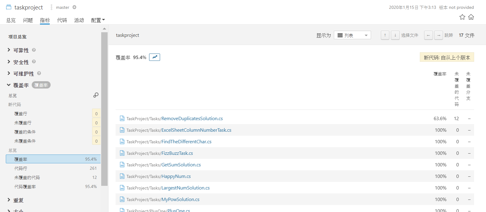
Jenkins Console 亂碼 參考保哥的文章Jenkins on Windows 心得分享 (03)：有效避免記錄檔或訊息出現亂碼的方法
將 Java 的預設字集修改為 UTF-8 編碼：SETX /M JAVA_TOOL_OPTIONS -Dfile.encoding=UTF8 將自訂的「執行 Windows 批次指令」的第一行都加上以下命令：chcp 65001 1 2 3 4 5 6 7 8 stage('sonar end' ) { steps { bat label: '' , script: ''' chcp 65001 SonarScanner.MSBuild.exe end /d:sonar.login="32aafa7ac56a55dae90d0891487e7af98506ed33" ''' } }